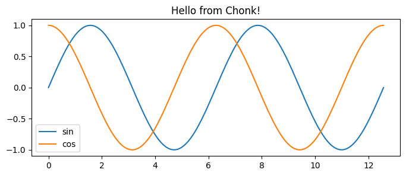

from ipyfernel import *demo
Demo of sample
ipyfernel usage
Getting Started
There are a few things we need to do to make sure this setup will connect. One is the name of the remote kernel. Another is the validity of the SSH connection.
Register the remote kernel
Register which python executable you plan to use on the remote machine:
register_remote_kernel(remote_python='/Users/shawley/exercises/solveit/.venv/bin/python')ipyf_remote_kernel is already a registered kernelSetup SSH TCP Proxy
Make sure your SSH keys are up to date the following command will create a new key and/or overwrite an old key and print the resulting public key to the screen:
!ssh-keygen -t ed25519 -f ~/.ssh/id_ed25519 -N '' -q -yssh-ed25519 AAAAC3NzaC1lZDI1NTE5AAAAIISw4Bii/B2kpnxN8Mo782wOFk/hDuLIAgqfmVY1KYHF solveit@e421467f4581NOTE: If you stop and start the SolveIt instance, the SSH key will probably go out of date, so you’ll need to run the above command to overwrite the old key.
Copy that output line and paste it into your remote machine’s ~/.ssh/authorized_keys file.
On the remote machine, setup a TCP proxy to port 22 (the ssh port) via bore:
bore local 22 --to bore.pub…and note the port it assigns you, e.g. “listening at bore.pub:10807” means your port is 10807. Note that bore.pub ports are only temporary, but this should be fine for a single session.
Installing bore on your server
If bore isn’t installed yet (e.g., on Lambda.ai):
sudo apt install cargo
cargo install bore-cli --locked
/home/ubuntu/.cargo/bin/bore local 22 --to bore.pubQuick Check- Manual SSH
Before going on, make sure that you’re able to manually SSH to the remote system.
In the Terminal for solveit, try to ssh using your bore port and username on the remote machine:
ssh -p <port> <username>@bore.pubIf that succeeds, you should be ready to go on.
Start the Remote Kernel
Now you should be ready to start the remote kernel:
port, user = 10807, 'shawley' # bore.pub and remote username
start_remote(port, user)/app/data/.ssh/config file updated.
Success: remote kernel startedProgress Bar
The remote execution has the same limitation that any other local SolveIt progress bars might have, e.g. nothing with \r – so no tqdm :-(. Here’s a simple one where the bar is a string that keeps getting longer.
#%%remote <-- this is the magic used for this cell
import time
import socket
hostname = socket.gethostname() # let's clarify that we're running remotely
print("We're executing on",hostname)
def test_progbar():
print("[", end="", flush=True)
for i in range(20):
print("=", end="", flush=True)
time.sleep(0.15)
print("] Done!")
test_progbar()We're executing on Chonk
[====================] Done!That worked! Chonk is the name of my remote laptop, and that progress bar went across the screen in real time over the span of a few seconds. For other types of progress bars, see fastprogress
Matplotlib Plot
#%%remote <-- cell magic for this execution (not displayed by docs)
import socket
import matplotlib.pyplot as plt
import numpy as np
hostname = socket.gethostname() # let's make sure we're running remotely
def test_plot():
x = np.linspace(0, 4*np.pi, 200)
plt.figure(figsize=(8,3))
plt.plot(x, np.sin(x), label='sin')
plt.plot(x, np.cos(x), label='cos')
plt.title(f"Hello from {hostname}!")
plt.legend()
plt.show()
test_plot()
The host name and the title confirms where it’s being executed.
GPU Execution
#%%remote
import torch
device = 'cuda' if torch.cuda.is_available() else 'mps' if torch.backends.mps.is_available() else 'cpu'
print("Device =",device)Device = mps‘Sticky’ Remote Execution
Rather than using the %%remote magic for every cell, we can make it so that cells execute remotely by default.
set_sticky()Code cells will now execute remotely.Note: since the kernel is persistent, we don’t need to import socket again.
print("We're executing on",socket.gethostname()) # Should say 'Chonk', i.e. remote latopWe're executing on ChonkThe idea with sticky mode is to make it “transparent”, as if you’re running the notebook on the remote machine,…which includes shell commands:
# List the standard system apps on remote Mac laptop.
!ls /System/Applications | head -n 4App Store.app
Apps.app
Automator.app
Books.app(The local system runs Linux, which has no /System/Applications directory)
We can temporarily override sticky mode’s redirect via the %%local IPython magic:
#%%local <--- magic for this cell
import socket
print("We're executing on",socket.gethostname())We're executing on 549d6fca895funset_sticky()Code cells will now run locally.# should be the same hostname as the previous local execution
print("We're executing on",socket.gethostname())We're executing on 549d6fca895fShutting down
The remote kernel stays running, and if you don’t explicitly stop it, you will eventually accumulate a whole bunch of zombie remote kernel processes, so it’s good practice to remember to shut it down:
stop_remote()Code cells will now run locally.
Shutting down remote kernelConnecting to Kaggle Kernels
You can also connect to Kaggle notebooks using connect_existing_kernel() with ngrok tunneling.
In your Kaggle Notebook
Install pyngrok and set up SSH access:
!pip install pyngrokfrom pyngrok import ngrok
# Set your ngrok token (get from ngrok.com dashboard)
ngrok.set_auth_token("YOUR_NGROK_TOKEN_HERE")Set up SSH directory and authorized keys:
!mkdir -p /root/.ssh
!chmod 700 /root/.ssh
!echo 'YOUR_PUBLIC_KEY_HERE' > /root/.ssh/authorized_keys
!chmod 600 /root/.ssh/authorized_keysInstall and start SSH server:
!apt-get update && apt-get install -y openssh-server
!service ssh startOpen your Ngrok tunnel
tunnel = ngrok.connect(22, "tcp")
print(f"New tunnel: {tunnel.public_url}")This outputs something like this:
Tunnel URL: tcp://2.tcp.ngrok.io:12998Copy the host and url e.g. 2.tcp.ngrok.io:12998
On your machine
Connect using the tunnel URL from ngrok:
connect_existing_kernel(tunnel='2.tcp.ngrok.io:14943')/app/data/.ssh/config file updated.
Successfully created connection file and forwarded ports!
Success: connected to remote kernel via 2.tcp.ngrok.io:14943Now you can execute code on the Kaggle kernel:
#%%remote <-- this is the magic used for this cell
import socket
hostname = socket.gethostname() # let's clarify that we're running remotely
print("We're executing on",hostname)
#%%remote <-- cell magic for this execution (not displayed by docs)
!nvidia-smiWe're executing on 2fda0b76c131
Mon Jan 12 09:06:29 2026
+-----------------------------------------------------------------------------------------+
| NVIDIA-SMI 570.172.08 Driver Version: 570.172.08 CUDA Version: 12.8 |
|-----------------------------------------+------------------------+----------------------+
| GPU Name Persistence-M | Bus-Id Disp.A | Volatile Uncorr. ECC |
| Fan Temp Perf Pwr:Usage/Cap | Memory-Usage | GPU-Util Compute M. |
| | | MIG M. |
|=========================================+========================+======================|
| 0 Tesla P100-PCIE-16GB Off | 00000000:00:04.0 Off | 0 |
| N/A 33C P0 26W / 250W | 0MiB / 16384MiB | 0% Default |
| | | N/A |
+-----------------------------------------+------------------------+----------------------+
+-----------------------------------------------------------------------------------------+
| Processes: |
| GPU GI CI PID Type Process name GPU Memory |
| ID ID Usage |
|=========================================================================================|
| No running processes found |
+-----------------------------------------------------------------------------------------+TODO: I never could get the magics to render in the docs, after many hours of trying. So all I could figure out to do was to just add them as comments.